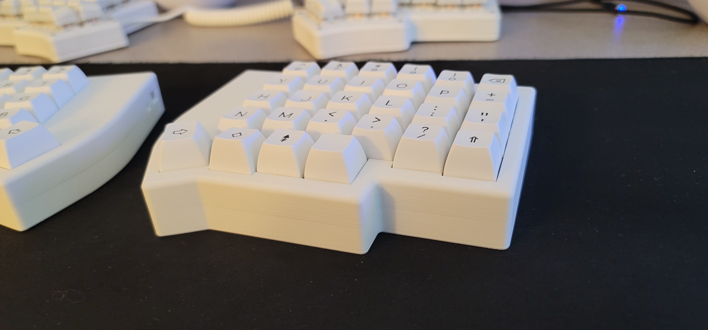
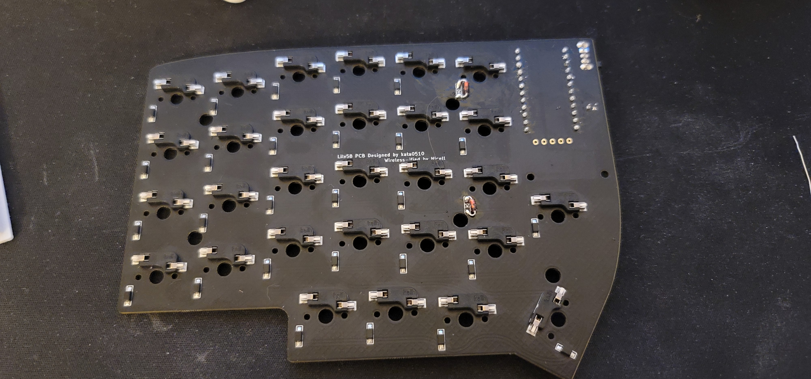

T'was the week after Christmas (the awkward end-of-year slog) - When I thought to myself "Wait... Don't I have a blog?"
As the last half-year has gone by, I've drafted a few posts that never made it to the web because life got in the way. I got swept into a massive relocation, career change, surgery and month-long bedrest... But in the meantime I've made a couple of small projects that fit well in a little lightning round here:
I finally bit the bullet on a lily58 . I've wanted to make another keyboard for a while after rocking two versions of the keebio iris since about 2021. For this new one my main goal was to make something fully wireless so I can achieve the cable-free workstation of my dreams. I stuffed a 750mAh battery in it which is way overkill. It has barely depleted in the month or so of using it at work.
The most interesting part of this though is the case. I decided to design my own case so I could use some of my CAD skills for once. I haven't gotten around to sanding and painting it, but I'm pretty happy with the results. Not sure what happened with that layer line in the middle though.

I did take a quick detour with this case while
trying to play with the acoustics of it. The design
has space under the PCB. This is both so I had a
place to put the (rather large) battery and also
because I knew I would want to potentially put foam
or something down there to play with the sound.

I thought it would be fun to print a TPU pad. You
can see it here in blue below the PCB

Another view here where you can see the PCB standoffs sticking up through it

The part printed beautifully despite the TPU being pretty old and having clearly taken on some moisture. Interestingly it made the keys sound very poppy. I was going for more of a thock and the empty chasm actually achieved that pretty well. So I didn't end up keeping the pad in there.
You might also notice the strange cutouts in the standoffs. The placement of the diodes on the Lily58's PCB are really close to the mounting holes. So an easy solution was to just eyeball some cutouts for them.
The diode placement caused quite the headache though. After I had assembled and disassembled the keyboard a few times my J key stopped registering. As I debugged my solder joints and firmware I disassembled and reassembled the case a few times. Then suddenly, the 6 key broke. After one last disassembly I realized what was happening. I designed this case based on the left PCB only. I figured it was a safe assumption that the right would just be mirrored. Frustratingly, though the cutouts were correct for the left PCB, the diodes on the right were placed in completely different places. Causing the standoffs to press into them and break. A quick change to the model to accommodate both placements and I was back in business.
Luckily, I had the exact diode that the pre-soldered PCB came with. Unluckily I didn't have it in the surface mount package. Resulting in this abomination:

Fortunately no one (other than myself everyone who reads this) has to know about it.
Eventually I would like to tackle a V2 which has a more official reset button and power switch but for now you can find the cad on onshape , the firmware on github and the exact board I sourced on typeractive
A quick project I did is a compile-time game of life implementation in C++ templates.
(warning, the repository is in a very sorry state at the time of writing)
I restricted myself to using the
pattern-matching-logical-paradigm-y design
philosophy of template meta-programming. Passing
around wrapper types or using
constexpr
would have been much easier and wouldn't have been
susceptible to the biggest problem with what I
wrote. That is, querying the game board creates
many
template instantiations. So much so that even modest
size boards overrun clang's default template
instantiation limit. Cranking that limit up is a
solution and allowed me to keep working but that's a
fundamental flaw with the mechanism I'm using for
calculating the game state. There's some
optimizations I can do to reduce the number of
instantiations, but I could also just do the sane
thing and have a
std::array
that I pass around at compile time.
I originally went into this with the idea that I would write a python script to also do game of life to validate the implementation. I set up this project with my go-to testing framework GTest... Only to realize that it doesn't really make sense to test things this way using it because the library is designed to have one board per compilation unit. Meaning one test per file. This seemed more cumbersome than it was worth so I dropped the idea.
Since making this site I've wanted to add RSS to it. I figured it would be a good candidate for something to do while I was on bed-rest for that injury I mentioned earlier. I already have a "static site generator" script for this site which handles converting my blog posts from markdown to html (as well as connecting up all the pages in the site) so I shoved it in there .
That script is getting a little bloated so refactoring it is getting tempting. But I'll save that for a rainy day.
I've been meaning to learn rust for a while now so I decided to do a small project in it. My goal was to implement a CLI which can query servers running online lobbies for various source engine games. I saw that the protocol was documented online so I figured it would be a quick weekend project. I started out in a python script to nail down any oddities of the protocol before moving to rust so I could focus on language mechanics. Unfortunately I never really made it past the python script. The source server query protocol has a handful of obnoxious oddities which make it one of the most... interesting ... protocols I've ever seen. I want to write a full post on it and what can be learned about how not to design a protocol. so I'll keep this brief here.
Recent life changes have given me inspiration to make more. So hopefully that means I'll have more to show here soon. Until then, hopefully the new year treats you well.